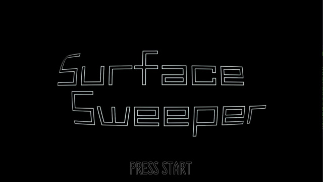
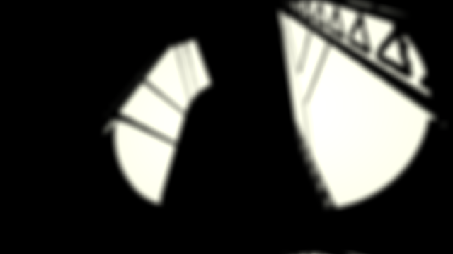
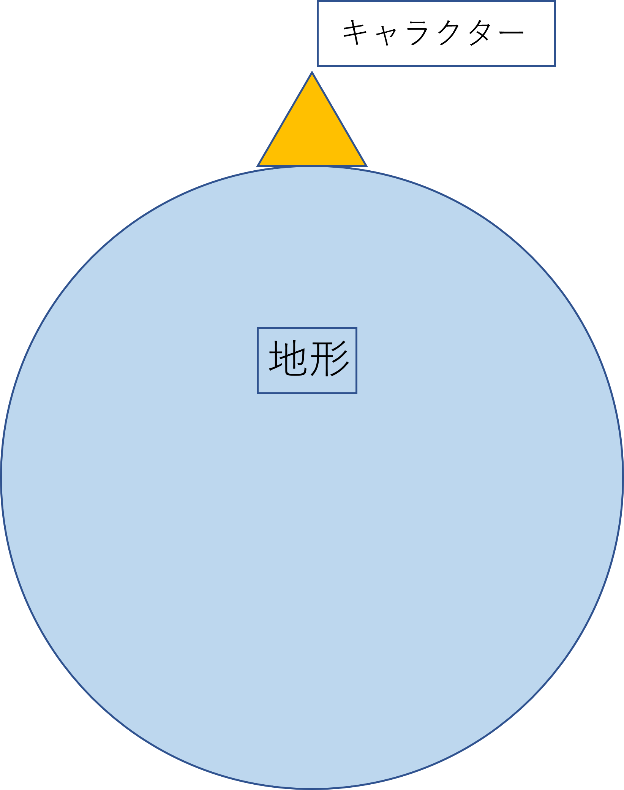
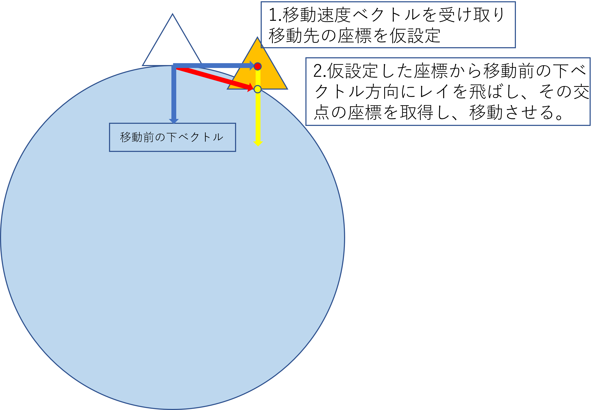
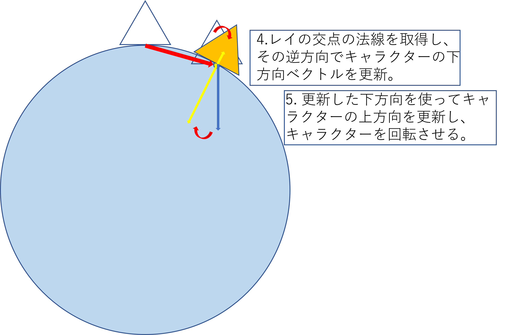

河原電子ビジネス専門学校
ゲームクリエイター科 2年 越智 翔平
_____________________________________________________________________
目次
- 概要
- 操作方法
- 担当ソースコード
- 技術解説
- 川瀬式ブルーム
- デプスシャドウ
- 球面移動
- こだわり、工夫した点
1.概要
______________________________________________
- 作品名:SURFACE SWEEPER

- 使用ゲームエンジン:学内ゲームエンジン
- 使用言語:C++
- 開発環境:VisualStudio 2019
- 使用ツール:3dsMax,Effekseer
- 使用ライブラリ:DirectXTK12,BulletPhysics,Effekseer
- 制作人数:1人
- 制作期間:5ヵ月
- Github:https://github.com/kw11SL/miniEngine
2.操作方法
______________________________________________
- スタートボタン:タイトルからインゲームへの遷移
- Aボタン:リザルト画面からタイトルへの遷移
- 左スティック:自機の移動
- 右スティック:発射方向の変更
- 右トリガー1:弾の発射(右スティックを倒した方向に発射)
- 左トリガー1:使用する弾の切り替え
3.担当ソースコード
______________________________________________
#####エンジン部分
- RenderingEngine.cpp
- RenderingEngine.h
- SkinModelRender.cpp
- SkinModelRender.h
- SpriteRender.cpp
- SpriteRender.h
- ShadowMapRender.cpp
- ShadowMapRender.h
- FontRender.cpp
- FontRender.h
- DirectionLight.cpp
- DirectionLight.h
- PointLight.cpp
- PointLight.h
- SpotLight.cpp
- SpotLight.h
- Bloom.cpp
- Bloom.h
- GaussianBlur.cpp
- GaussianBlur.h
- MyCharacterController.cpp
- MyCharacterController.h
- SphericalMove.cpp
- SphericalMove.h
ゲーム部分
- main.cpp
- GameDirector.cpp
- GameDirector.h
- Game.cpp
- Game.h
- GameCamera.cpp
- GameCamera.h
- Player_new.cpp
- Player_new.h
- Bullet.cpp
- Bullet.h
- BulletManager.cpp
- BulletManager.h
- Enemy.cpp
- Enemy.h
- EnemyGenerator.cpp
- EnemyGenerator.h
- ExplosionBase.cpp
- ExplosionBase.h
- SpreadBombExplosion.cpp
- SpreadBombExplosion.h
- EnemyExplosion.cpp
- EnemyExplosion.h
- Explosion.cpp
- Explosion.h
- BG.cpp
- BG.h
- StageBackGround.cpp
- StageBackGround.h
- Title.cpp
- Title.h
- TitleSprite.cpp
- TitleSprite.h
- PressStart.cpp
- PressStart.h
- UI.cpp
- UI.h
- UIOutline.cpp
- UIOutline.h
- Score.cpp
- Score.h
- Timer.cpp
- Timer.h
- Life.cpp
- Life.h
- Wave.cpp
- Wave.h
- WeaponIcon.cpp
- WeaponIcon.h
- WaveCutIn.cpp
- WaveCutIn.h
- WaveCutIn.cpp
- WaveCutIn.h
- Result.cpp
- Result.h
- GameOver.cpp
- GameOver.h
- stdafx.h
4.技術解説
_____________________________________________________________________
1.川瀬式ブルーム
現実世界で、ある物体に対して強い光が当たる、もしくは物体自身が強い光を放っている場合、光が溢れだす現象が起きる。
このような現象をブルームという。本ゲームではこの現象を再現し、より綺麗に見せるため、
既存のブルームのアルゴリズムを改良したものである川瀬式ブルームと呼ばれるものを実装している。
川瀬式ブルームとは、かつてぶんか社に所属していた川瀬正樹氏が2003年のGDC(Game Developers Conference)で発表したブルームフィルタの手法である。
まず、一般的なブルームでは、
- シーンをレンダーターゲットにレンダリング
- レンダーターゲットからシーンの輝度を輝度テクスチャとして抽出する。
- 抽出した輝度テクスチャにガウシアンブラーを掛けてぼかす
- ぼかした輝度テクスチャをレンダーターゲットに加算合成する
といった手順で行われる。
川瀬式ブルームでは、上記3のときに
- 抽出した輝度テクスチャを基にガウシアンブラーを掛ける。
- ダウンサンプリング(縮小)を行う。
- ダウンサンプリングされたテクスチャを元に再度ブラー処理と縮小処理を行う。
という処理を複数回繰り返し、最終的にダウンサンプリングされた複数のテクスチャをシーンの解像度に引き延ばして加算合成を行うことで一般的なブルーム処理より綺麗なブルーム処理を実現するというものである。
以下の画像はRenderDocでキャプチャしたブルーム処理中の様子である。
本ゲーム内ではブラーと縮小の処理を4回行っている


 
左上:元のシーン 右上:輝度抽出テクスチャ 左下:ブラーと縮小1回目 右下:ブラーと縮小2回目


左上:ブラーと縮小3回目 右上:ブラーと縮小4回目 左下:シーンに最終合成
2.デプスシャドウ
3.球面移動
本ゲームではキャラクターや自機弾がステージの地形に沿って動くようになっている。

図の状態からキャラクターを右方向に移動させるとする。

キャラクターが右方向に移動すると、移動先の座標を仮設定する。仮決定した座標から下ベクトル方向にレイを飛ばし、地形との交点の座標を取得し、キャラクターをその座標に移動させる。

移動後、レイの交点の地形の法線を取得し、法線の逆方向をキャラクターの下方向ベクトルとして更新する。その後、更新した下方向ベクトルの逆方向をキャラクターの上方向ベクトルとして更新し、キャラクターの回転を行うことで、地形に沿った移動ができるようになっている。
5.こだわり、工夫した点
_____________________________________________________________________